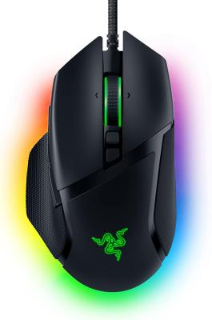

<div id="container-mouse">

    <div class="product-info">
        <h1 class="product-title">Razer Basilisk V3</h1>

        <div class="row align-items-center">
          <!-- Columna del texto -->
          <div class="col-md-8">
            <p class="lead">
                Ratón gaming óptico con 11 botones programables y sensor de 26.000 DPI
            </p>

            <a href="https://www.amazon.es/dp/B097F8H1MC" target="_blank">Amazon</a>
          </div>

          <!-- Columna de la imagen -->
          <div class="col-md-4 text-center">
            
          </div>
        </div>

        <hr>

        <table class="product-specs">
            <tr><th>Marca</th><td>Razer</td></tr>
            <tr><th>Modelo</th><td>Basilisk V3</td></tr>
            <tr><th>Tecnología de conexión</th><td>USB</td></tr>
            <tr><th>Tipo de sensor</th><td>Óptico</td></tr>
            <tr><th>Sensibilidad máxima</th><td>26.000 DPI</td></tr>
            <tr><th>Cantidad de botones</th><td>11 programables</td></tr>
            <tr><th>Iluminación</th><td>LED RGB personalizable</td></tr>
            <tr><th>Diseño</th><td>Ambidiestro</td></tr>
            <tr><th>Compatibilidad</th><td>Windows, Mac, PC, Portátiles</td></tr>
            <tr><th>Fuente de energía</th><td>Cable USB</td></tr>
            <tr><th>Dimensiones</th><td>13 x 7,5 cm</td></tr>
            <tr><th>Peso</th><td>127 g</td></tr>
            <tr><th>Material</th><td>Plástico con acabado mate</td></tr>
            <tr><th>Color</th><td>Negro</td></tr>
            <tr><th>Uso recomendado</th><td>Videojuegos</td></tr>
            <tr><th>Contenido de la caja</th><td>Manual, Razer Basilisk V3</td></tr>
        </table>
    </div>

</div>